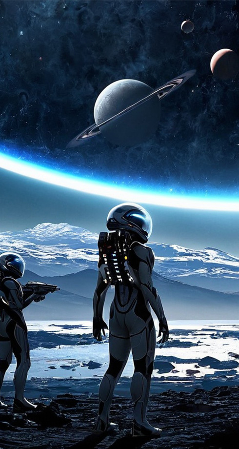

Галактику населяють чотири раси – люмініти, соларіанці, терратори і акваїти.
Люмініти черпають силу зі світла, соларіанці живуть у гармонії із сонцем, терратори тісно пов'язані з землею, а акваїти поклоняються воді.

Люмініти черпають силу зі світла, соларіанці живуть у гармонії із сонцем, терратори тісно пов'язані з землею, а акваїти поклоняються воді.